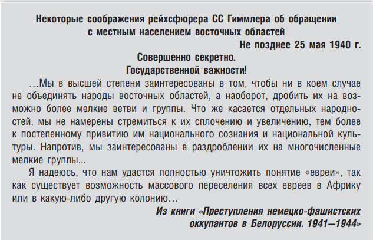

На этой странице представлена информация о планах нацистов по уничтожению населения Беларуси во время Второй мировой войны.
Цель нацистской политики в Беларуси заключалась в уничтожении населения, с целью создания "жизненного пространства" для Германии.
Нацистская Германия, под руководством Адольфа Гитлера, разработала детализированный план по уничтожению еврейского народа и других групп, которые они считали "нежелательными". Этот план был частью более широкой идеологии расового превосходства и включал следующие ключевые аспекты:
Эти ужасающие действия привели к одному из самых трагических периодов в истории человечества и должны служить предупреждением для будущих поколений о необходимости защиты прав человека и борьбы с ненавистью.
В ноябре 2023 года издательство «Беларусь» выпустило новую книгу «Геноцид белорусского народа. Карательные операции», подготовленную Генеральной прокуратурой Республики Беларусь в рамках расследования уголовного дела о геноциде белорусского народа в годы Великой Отечественной войны. В издании представлены новые и ранее неизвестные широкой общественности материалы о планировании и реализации нацистской Германией политики геноцида белорусского народа путём проведения массовых карательных операций. Приведены доказательства зверских способов расправ нацистов с мирным населением БССР, а также участия в указанных преступлениях украинских, латышских, белорусских и других коллаборационистов.
В Белорусском государственном музее истории Великой Отечественной войны открылась выставка «Единой памяти верны», посвящённая 80-й годовщине начала освобождения Беларуси. Эта временная экспозиция является совместным проектом музея с региональными музеями Беларуси и музеями военно-исторического профиля стран СНГ. Уже сегодня открыт первый раздел этой большой выставки, посвящённый началу освобождения Беларуси. Вся выставка будет состоять из трёх разделов: начало освобождения, партизанское движение и операция Багратион.
Совместный проект АТН и Генеральной прокуратуры Республики Беларусь «Геноцид. Дело №» – это цикл из восьми роликов, снятых на основе показаний свидетелей и очевидцев преступлений фашистов и их пособников в годы Великой Отечественной войны.
В наглядной и доступной форме показаны обстоятельства геноцида белорусского народа в годы оккупации БССР, в том числе на примере судеб детей.
Визуализация фактов народной трагедии не сможет оставить равнодушными зрителя и будет способствовать формированию бережного и уважительного отношения к истории Беларуси.